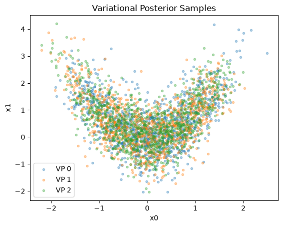

PyVBMC Example 4: Multiple runs as validation#
Here we explore running PyVBMC multiple times in order to validate the results: if the final variational posteriors obtained from several different initial points are consistent, we can be more confident that the results are correct.
This notebook is Part 4 of a series of notebooks in which we present various example usages for VBMC with the PyVBMC package. The code used in this example is available as a script here.
import sys
if "google.colab" in sys.modules: # Colab lacks PyVBMC: install it
%pip install --upgrade pyvbmc
import numpy as np
import scipy.stats as scs
from scipy.optimize import minimize
from pyvbmc import VBMC
import matplotlib.pyplot as plt
1. Model definition#
We use the same toy target function as in Example 1, a broad Rosenbrock’s banana function in \(D = 2\), with unbounded parameters:
D = 2 # We'll use a 2-D problem for a quicker demonstration
prior_mu = np.zeros(D)
prior_var = 3 * np.ones(D)
def log_prior(theta):
"""Multivariate normal prior on theta."""
cov = np.diag(prior_var)
return scs.multivariate_normal(prior_mu, cov).logpdf(theta)
# log-likelihood (Rosenbrock)
def log_likelihood(theta):
"""D-dimensional Rosenbrock's banana function."""
theta = np.atleast_2d(theta)
x, y = theta[:, :-1], theta[:, 1:]
return -np.sum((x**2 - y) ** 2 + (x - 1) ** 2 / 100, axis=1)
# Full model:
def log_joint(theta, data=np.ones(D)):
"""log-density of the joint distribution."""
return log_likelihood(theta) + log_prior(theta)
LB = np.full((1, D), -np.inf) # Lower bounds
UB = np.full((1, D), np.inf) # Upper bounds
PLB = np.full((1, D), prior_mu - np.sqrt(prior_var)) # Plausible lower bounds
PUB = np.full((1, D), prior_mu + np.sqrt(prior_var)) # Plausible upper bounds
options = {
"max_fun_evals": 50 * D # Slightly reduced from 50 * (D + 2), for speed
}
2. Validation#
For validation, we recommend running PyVBMC 3-4 times from different initial points:
np.random.seed(42)
n_runs = 3
vps, elbos, elbo_sds, success_flags, result_dicts = [], [], [], [], []
for i in range(n_runs):
print(f"PyVBMC run {i} of {n_runs}")
# Determine initial point x0:
if i == 0:
x0 = prior_mu # First run, start from prior mean
else:
x0 = np.random.uniform(PLB, PUB) # Other runs, randomize
# Preliminary maximum a posteriori (MAP) estimation:
x0 = minimize(
lambda t: -log_joint(t),
x0.ravel(), # minimize expects 1-D input for initial point x0
bounds=[(-np.inf, np.inf), (-np.inf, np.inf)],
).x
# Run PyVBMC:
vbmc = VBMC(
log_joint,
x0,
LB,
UB,
PLB,
PUB,
options=options,
)
vp, results = vbmc.optimize()
# Record the results:
vps.append(vp)
elbos.append(results["elbo"])
elbo_sds.append(results["elbo_sd"])
success_flags.append(results["success_flag"])
result_dicts.append(results)
PyVBMC run 0 of 3
Reshaping x0 to row vector.
Beginning variational optimization assuming EXACT observations of the log-joint.
Performance settings: saved calibration.
Tip: Run VBMC 3–4 times with different starting points. Compare the posterior plots across runs; large differences can indicate that a run missed part of the posterior.
https://acerbilab.org/pyvbmc/_examples/pyvbmc_example_4_validation.html
Iteration f-count Mean[ELBO] Std[ELBO] sKL-iter[q] K[q] Convergence Action
0 10 -1.24 1.21 154443.24 2 inf start warm-up
1 15 -1.85 0.08 4.75 2 inf
2 20 -1.80 0.00 0.11 2 2.79
3 25 -1.80 0.00 0.01 2 0.244
4 30 -1.82 0.00 0.01 2 0.241 end warm-up
5 35 -1.80 0.00 0.00 2 0.139
6 40 -1.80 0.00 0.00 2 0.0517
7 45 -1.59 0.00 0.12 5 3.57
8 50 -1.60 0.00 0.00 6 0.0433
9 55 -1.57 0.00 0.00 6 0.18
10 60 -1.57 0.00 0.00 9 0.0886 rotoscale, undo rotoscale
11 65 -1.57 0.00 0.00 9 0.036
12 70 -1.54 0.00 0.00 12 0.145
13 75 -1.54 0.00 0.00 15 0.0138 stable
inf 75 -1.53 0.00 0.00 50 0.0138 finalize
Inference terminated: variational solution stable for options.tol_stable_count fcn evaluations.
Estimated ELBO: -1.530 +/-0.001.
PyVBMC run 1 of 3
Reshaping x0 to row vector.
Beginning variational optimization assuming EXACT observations of the log-joint.
Performance settings: saved calibration.
Iteration f-count Mean[ELBO] Std[ELBO] sKL-iter[q] K[q] Convergence Action
0 10 -1.29 0.94 225710.68 2 inf start warm-up
1 15 -1.80 0.09 6.33 2 inf
2 20 -1.79 0.01 0.18 2 4.23
3 25 -1.80 0.00 0.00 2 0.0908
4 30 -1.81 0.00 0.01 2 0.21 end warm-up
5 35 -1.80 0.00 0.03 2 0.734
6 40 -1.81 0.00 0.00 2 0.071
7 45 -1.65 0.00 0.07 5 2.13
8 50 -1.63 0.00 0.02 6 0.494
9 55 -1.58 0.00 0.01 9 0.309
10 60 -1.58 0.00 0.00 12 0.0467 rotoscale, undo rotoscale
11 65 -1.55 0.00 0.00 12 0.199
12 70 -1.54 0.00 0.00 14 0.0979
13 75 -1.54 0.00 0.00 13 0.0653 stable
inf 75 -1.54 0.00 0.00 50 0.0653 finalize
Inference terminated: variational solution stable for options.tol_stable_count fcn evaluations.
Estimated ELBO: -1.541 +/-0.001.
PyVBMC run 2 of 3
Reshaping x0 to row vector.
Beginning variational optimization assuming EXACT observations of the log-joint.
Performance settings: saved calibration.
Iteration f-count Mean[ELBO] Std[ELBO] sKL-iter[q] K[q] Convergence Action
0 10 -1.27 0.76 184852.14 2 inf start warm-up
1 15 -1.91 0.01 6.58 2 inf
2 20 -1.85 0.00 0.04 2 1.18
3 25 -1.87 0.00 0.01 2 0.278
4 30 -1.86 0.00 0.01 2 0.272 end warm-up
5 35 -1.83 0.00 0.14 2 3.48
6 40 -1.80 0.00 0.04 2 1.1
7 45 -1.71 0.00 0.02 3 0.812
8 50 -1.65 0.00 0.02 6 0.723
9 55 -1.61 0.00 0.03 9 0.83
10 60 -1.60 0.00 0.00 12 0.0715 rotoscale, undo rotoscale
11 65 -1.59 0.00 0.00 15 0.0861
12 70 -1.58 0.00 0.00 16 0.0347
13 75 -1.58 0.00 0.00 15 0.0615
14 80 -1.57 0.00 0.00 14 0.0502 stable
inf 80 -1.53 0.00 0.01 50 0.0502 finalize
Inference terminated: variational solution stable for options.tol_stable_count fcn evaluations.
Estimated ELBO: -1.529 +/-0.001.
We now perform some diagnostic checks on the variational solution. First, we check that the ELBO’s from different runs are close to each other (i.e. with a difference much smaller than 1):
print(np.array(elbos))
[-1.53002795 -1.54059281 -1.52906984]
Then, we check that the variational posteriors from distinct runs are similar. As a measure of similarity, we compute the Kullback-Leibler divergence between each pair:
kl_matrix = np.zeros((n_runs, n_runs))
for i in range(n_runs):
for j in range(i, n_runs):
# The `kl_div` method computes the divergence in both directions:
kl_ij, kl_ji = vps[i].kl_div(vp2=vps[j])
kl_matrix[i, j] = kl_ij
kl_matrix[j, i] = kl_ji
Note that the KL divergence is asymmetric, so we have an asymmetric matrix:
print(kl_matrix)
[[-0. 0.07969042 0.0535709 ]
[ 0.04087624 -0. 0.00929074]
[ 0.03297249 0.00921507 -0. ]]
Ideally, we want all KL divergence matrix entries to be much smaller than 1. For a qualitative validation, we recommend a visual inspection of the posteriors:
for i, vp in enumerate(vps):
samples, __ = vp.sample(1000)
plt.scatter(
samples[:, 0],
samples[:, 1],
alpha=1 / len(vps),
marker=".",
label=f"VP {i}",
)
plt.title("""Variational Posterior Samples""")
plt.xlabel("x0")
plt.ylabel("x1")
plt.legend();

We can also check that convergence was achieved in all runs, according to PyVBMC (we want success_flag = True for each run):
print(success_flags)
[True, True, True]
Finally, we can pick the variational solution with highest ELCBO (the lower confidence bound on the ELBO).
beta_lcb = 3.0 # Standard confidence parameter (in standard deviations)
# beta_lcb = 5.0 # This is more conservative
elcbos = np.array(elbos) - beta_lcb * np.array(elbo_sds)
idx_best = np.argmax(elcbos)
print(idx_best)
2
The VariationalPosterior class implements save and load methods, similar to VBMC (as we saw in Example 3). We’ll save this best posterior to a file for later use:
vps[idx_best].save("noise_free_vp.pkl", overwrite=True)
3. Conclusions#
In this notebook, we have shown you some techniques to validate the results of PyVBMC by comparing statistics across multiple runs.
In the next notebook, we will discuss how to specify prior distributions with PyVBMC.
Acknowledgments#
Work on the PyVBMC package is supported by the Research Council of Finland (grants 356498 and 358980 to Luigi Acerbi) and its Flagship programme: Finnish Center for Artificial Intelligence FCAI.